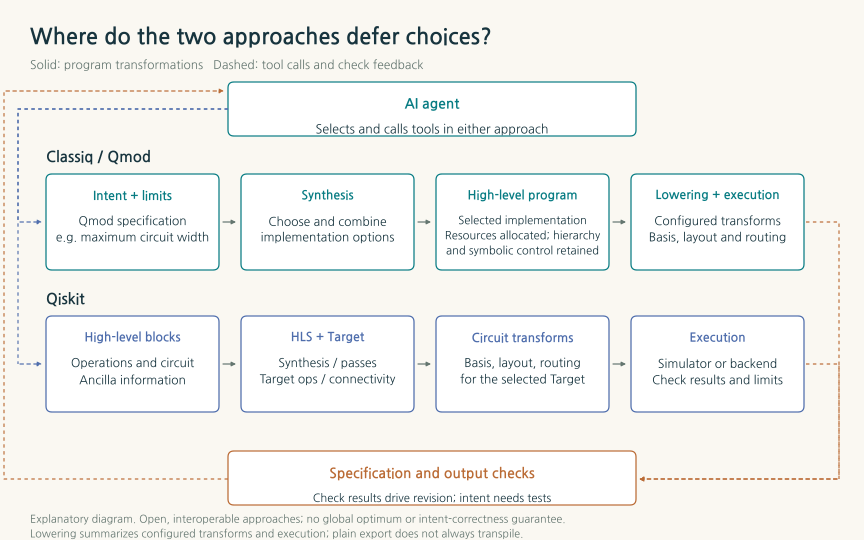
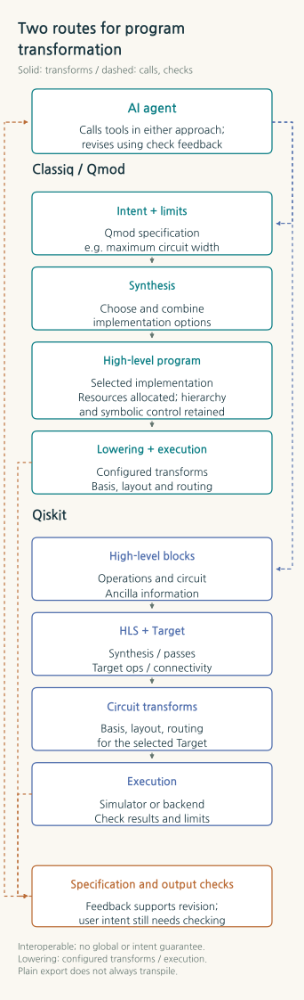
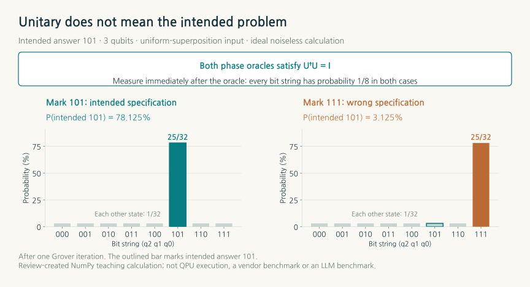
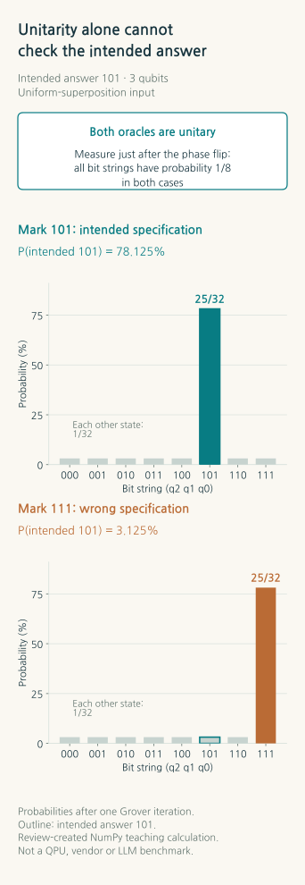
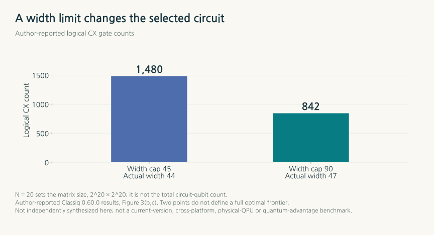
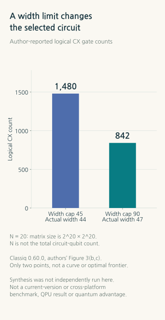

Two Paths in Quantum Software: Circuit Synthesis, AI Agents, and Platform Power
What do Classiq's high-level modeling and the Qiskit–CUDA-Q tool ecosystems automate differently? A conditional outlook grounded in specification correctness, qubit–operation tradeoffs, hardware integration, and barriers to adoption.
TECH REVIEW · October 25, 2026 · Quantum programming, compilers, and AI agents

Contents
- 1. The wrong question, answered faithfully by a machine
- 2. How long can a program retain “what to compute”?
- 3. The questions a compiler check can answer
- 4. Where synthesis makes a difference: borrowing space to reduce operations
- 5. What agents do—and what they delegate
- 6. The two ways of partnering with hardware companies intersect
- 7. Does an easier route eliminate a technology—or change its position?
- 8. Observations that distinguish three possible futures
- 9. The next comparison must count the full cost of one successful calculation
- References and production materials
1. The wrong question, answered faithfully by a machine
Imagine building a quantum program to find one correct answer among eight candidates. The answer is labeled by the three-bit string 101. You ask an AI to write the program, but its circuit marks 111 as the answer. The syntax is valid, the operations are allowed by quantum mechanics, and the computation finishes normally. A better machine may simply find the wrong candidate more faithfully.
This small example offers a way into the competition in quantum software. Translating a natural-language request into code, implementing a mathematical model as a circuit, adapting that circuit to a particular device, and checking whether the result answers the original question are connected capabilities, but they do different jobs. To the user, it is one request to “run the calculation.” Between request and result lie several distinct responsibilities.
Classiq has developed an approach that expresses functions, quantum variables, and resource conditions in a high-level model, leaving implementation choices to a synthesis engine. Tool ecosystems centered on Qiskit and CUDA-Q combine supported algorithmic blocks with synthesis, compilation, and execution capabilities. An AI agent can sit in front of either approach. The competition therefore cannot be reduced to a single opposition between a new language and gate coding, or between proprietary and open-source software. [2–5,12]
The question that will determine platform power is less which interface writes more plausible code than which approach can keep reducing the total cost of turning the same objective into a verifiable result. High-level synthesis reduces the burden of implementation choices; tool ecosystems lower barriers to composition, modification, and deployment. Where the two paths overlap, interoperability grows. Where differences remain, comparative experiments are needed. This review examines those differences and their conditional implications through papers, documentation, and public code checked through October 25, 2026.
2. How long can a program retain “what to compute”?
In an ordinary program, an expression that adds two numbers is short. In a quantum program, it comes with further decisions: how many qubits represent the numbers, what sign and fractional precision they use, whether the result occupies fresh storage, and how the workspace used for intermediate calculations is restored. These decisions change the circuit's size and operation count.
Qmod, Classiq's high-level quantum modeling language, retains quantum variables and functional relationships in the model. It can also be written using Python syntax, so users need not begin by learning a separate textual language. Writing a Python expression, however, does not mean that arbitrary Python computations execute unchanged on quantum states. Quantum numbers have finite bit widths and representable ranges, and the output width of an addition or the handling of overflow forms part of the program's meaning. [2,3]
Uncomputation—restoring temporary workspace to its original state after a function has been used—is another important example. Unlike erasing an intermediate value on paper, quantum computation must account for correlations left between the inputs and temporary registers. Qmod automates this task through particular type and dependency rules and structures for inverse operations. Reducing the implementation burden through such rules has real technical value. Extending their guarantees to the validity of the entire problem definition, or to success on every device, changes the scope of the claim. [3]
Qiskit also accepts high-level information. HighLevelSynthesis lowers supported abstract and annotated operations through synthesis methods, passing information about available auxiliary qubits to the synthesizers. For example, an MCX operation, which flips a target bit when all its control bits are 1, can remain a single high-level object. The chosen decomposition depends on available workspace and evaluation criteria. Describing Qiskit as a tool that merely removes redundant gates from an already fully lowered circuit does not match its current implementation. [4]
That does not make the scope of automation identical in the two systems. The comparison concerns what meaning can be retained in the input, which choices are automated for supported operations, and how much users must manage program-wide resource allocation and connections between tools. Qmod's functional models and service-based synthesis, and Qiskit's extensible objects, plugins, and passes, offer overlapping but different design choices.


What matters in the diagram is not the number of boxes, but which information survives until an implementation decision is made. Knowing that an operation is an addition, and knowing the available workspace, allows a tool to choose among different adders. If it receives only an already fixed sequence of low-level operations, recovering that higher-level intent may require extra work. Real tools operate at several levels, so synthesis and transpilation should not be assigned exclusively to one company each.
3. The questions a compiler check can answer
Consider the eight-candidate example more closely. The computational basis of three qubits runs from 000 to 111. After preparing equal amplitudes for all candidates, we apply a phase oracle that puts a minus sign on one particular candidate. The oracle is the part that implements the algorithm's search condition as a quantum operation. [1]

Here,  denotes a candidate's three bits, and
denotes a candidate's three bits, and  is a function that returns 1 when the condition is satisfied and 0 otherwise. The phase oracle changes the sign of the amplitude of a matching candidate. Because probability is the squared magnitude of amplitude, measuring the bits immediately afterward still gives a probability of 1/8 for each of the eight candidates. That measurement distribution alone cannot distinguish whether the correct sign was changed.
is a function that returns 1 when the condition is satisfied and 0 otherwise. The phase oracle changes the sign of the amplitude of a matching candidate. Because probability is the squared magnitude of amplitude, measuring the bits immediately afterward still gives a probability of 1/8 for each of the eight candidates. That measurement distribution alone cannot distinguish whether the correct sign was changed.
For this review, we calculated the example exactly using an eight-dimensional NumPy statevector. The correct oracle marks 101, while a deliberately incorrect oracle marks 111. Both are unitary operations: they preserve the state's normalization. Following the phase oracle with one application of the diffusion operation—a reflection about the mean amplitude—gives the candidate marked by each oracle a probability of 25/32, and each remaining candidate a probability of 1/32. The probability of obtaining the intended answer, 101, is 78.125% with the correct specification and 3.125% with the incorrect one. [1,18]


The phase oracle followed by diffusion constitutes one Grover iteration here. Both outputs in the figure contain a tall bar. That is why the presence of a tall bar alone does not establish that the original problem was solved correctly. Even if a synthesis engine implements its input model faithfully, the result changes when the input  specifies a different problem. Conversely, a circuit that incorrectly implements a valid model presents an error for compilation or equivalence checking to address. The meaning of the problem, preservation through implementation, and accuracy of physical execution must each be checked.
specifies a different problem. Conversely, a circuit that incorrectly implements a valid model presents an error for compilation or equivalence checking to address. The meaning of the problem, preservation through implementation, and accuracy of physical execution must each be checked.
Classiq's automatic cleanup rules are likewise not an unconditional proof of the whole algorithm. Its documentation identifies boundaries around unchecked declarations and deallocation conditions, and its own Quantum Engineering Interface explicitly disclaims a guarantee that AI results are correct. Qiskit's Target is also a device model describing supported operations, connectivity, timing, and error properties—not a tool for judging the user's research question. This distinction establishes a fair starting point for comparing the two approaches, rather than singling out a defect in either one. [3,5,8]
4. Where synthesis makes a difference: borrowing space to reduce operations
The strength of synthesis extends beyond quickly writing a circuit whose implementation has already been decided. It lies in selecting an implementation that fits the resource conditions from several ways of performing the same operation. With fewer auxiliary qubits, intermediate values may need to be computed and uncomputed more often. Allowing more space can enable a different arrangement of operations. What counts as a good implementation therefore depends on which resource is being conserved.
A key metric is CX, the controlled-X or CNOT operation, which flips the target bit when the control bit is 1. Goldfriend and colleagues' synthesis preprint illustrates implementation choices through a matrix block-encoding example. Block encoding embeds the required matrix in part of a larger unitary operation. In Figure 3, means that the matrix has dimensions ; it is not the total number of circuit qubits. With the objective of reducing CX count, the authors report an actual width of 44 qubits and 1,480 CX operations under a width cap of 45, and 47 qubits and 842 CX operations under a cap of 90. The selected adder implementation also changes. [6]


The two reported circuits differ by three qubits in actual width and 638 CX operations. A different adder implementation was selected without filling all the permitted space. Doubling the space limit did not double the space actually used. Among the additional choices made possible, the implementation selected uses 47 qubits. The reduction in CX count is a useful resource change, but it cannot be converted directly into a corresponding execution-time reduction without considering the target device's connectivity, operation times, noise, and error-correction costs.
Current Qiskit 2.6.1 also makes some resource-dependent choices of this kind. In the pinned code, the default MCX synthesis receives information about the availability of clean auxiliary qubits in the zero state and dirty auxiliary qubits whose states are unknown. It changes the priority of candidate implementations depending on whether the criterion is two-qubit operation count or T count. Clean workspace starts in a known zero state. Dirty workspace can be borrowed without knowing its state, but must be returned to the state it had before being borrowed. T is a gate that changes the relative phase by π/4 and is costly to implement in prominent error-correction schemes. Different decompositions can therefore be preferable depending on which count is minimized. This does not mean that optimal allocation across an entire program is automatically solved, but the comparison has already moved beyond simple gate-by-gate coding. [4]
Considering resource allocation globally is also different from proving a globally optimal solution. The synthesis paper's appendix explains that some search strategies can miss a possible optimum. The comparisons in that study used versions including Classiq 0.60.0 and Qiskit 1.2.4. They cannot be read as a current ranking against the latest Qiskit, CUDA-Q, and AI agents under matched conditions. [6]
Version differences also affect how the tools are used. The Classiq SDK examined at the cutoff was 1.33.1. Its current default flow preserves the synthesized higher-level program and separates device-specific gate and connectivity transformations into later stages. Default export skips additional transformation; target-specific transformation occurs during configured export, requests for post-transpilation metrics, and execution. General approximate metrics must also be distinguished from metrics obtained after target-specific transformation. Carrying an old paper and its configuration examples directly into an explanation of the current API obscures what was optimized. Comparisons need to fix the input model, compiler versions, objective function, target, and search time together. [3,7]
5. What agents do—and what they delegate
Can an LLM be made to assemble large Qiskit function blocks? Yes. Connections already exist that let agents call tools, read documentation, and construct or transform circuits. The existence of such a connection, however, must be distinguished from evidence that it automatically produces a correct algorithm.
| Component | What it actually does | Questions a comparison must retain |
|---|---|---|
| MCP server | Exposes tools, resources, and call formats to an agent | Which synthesis engines, checkers, and execution services does it actually call? |
| AI skill | Supplies task-specific instructions, resources, and procedures to an agent | Is the task supported in a released feature, or planned for the future? |
| Qiskit Function | Takes structured input and performs a circuit or application task as a service | What are the access conditions, task scope, and result metrics? |
| Coding model or agent | Generates code and plans, selects tools, and calls them iteratively | What detects errors in the specification, implementation, and results? |
These components play different roles. Qiskit Functions is currently in preview and is available to users on Premium, Flex, and On-Prem API plans. Access to a hosted service should not be equated with access to a public SDK. Qiskit's AI transpiler must also be distinguished from LLM coding assistance. The documented passes use reinforcement learning to improve resynthesis of supported circuit blocks or placement and routing. An agent can use that optimizer, but calling a tool does not replace its internal algorithm. [9,10]
The current status of each service matters as well. IBM's hosted Code Assistant preview ended on May 29, 2026, while guidance for using the public model locally remains available. In the pinned version of the official Skills repository examined here, Runtime code migration is a released task; broader problem mapping and optimization capabilities must be distinguished from the roadmap. Classiq, meanwhile, documents an agent interface and MCP and skills support for external coding tools. Its Quantum Engineering Interface specifies beta status and subscription conditions, while the Quantum Engineer Plugin specifies enterprise access. Comparing interface names alone mixes currently accessible features with future plans. [8–10]
LLM capability should not be fixed at a single accuracy number either. The Qiskit QuantumKatas study compared models and prompt configurations across 350 tasks in 26 categories. Its 34.4% result is not an overall success rate: it concerns one category, solving SAT with Grover's algorithm. It corresponds to 55 successes in 160 attempts across 10 problems and 16 models, in a comparison that selected each model's configuration with the best overall performance. The tests use simulators; they are neither an equal-budget contest between two platforms nor validation on physical devices. Whether the public repository alone fully reconstructs the paper's model and result snapshots also requires separate examination. [11]
The practical differences between agents emerge in what happens next: whether an agent can use checking results to correct a wrong candidate, preserve both the high-level model and the generated circuit, and compare against small known-answer cases before moving to a larger calculation. An LLM's ability to call tools effectively must advance alongside the semantic, resource, and execution contracts those tools provide.
6. The two ways of partnering with hardware companies intersect
A company that develops both software and hardware can reflect its device's supported operations and execution constraints in its tools. A platform connecting multiple devices seeks to reduce the cost of trying different machines and the fragmentation of their interfaces. These approaches have different strengths, but dividing companies into two closed camps misses the connections that actually exist.
Qiskit is public software developed by IBM. Quantinuum owns hardware while also providing public TKET software and connections to other interfaces. Classiq's support for multiple backends and its public examples do not mean that its entire synthesis service and SDK are open source. NVIDIA provides CUDA-Q's public tools for connecting multiple QPUs alongside a GPU and execution infrastructure. Hardware ownership, source openness, and portability across devices are three separate properties. [7,12–15]
| Connection | Integration identified in official sources | What the connection alone does not establish |
|---|---|---|
| Classiq → other circuit tools | Export to formats such as QASM; a function converting a Qmod program into a CUDA-Q kernel | Whether every program, feature, and device works without code changes |
| Qiskit → Quantinuum | Conversion to TKET circuits and submission to hardware through Nexus | Whether Qiskit exposes every device feature available through pytket |
| NVIDIA CUDA-Q | Hybrid Python and C++ programs, multiple QPUs, CPU/GPU simulation, and execution infrastructure | Whether QPU neutrality also removes dependencies on GPU environments and execution infrastructure |
| Amazon Braket | A cloud access point for multiple hardware systems and simulators | Whether device capabilities, prices, queues, and accuracy become identical |
| Azure Quantum and QIR | Provider-specific execution environments and a common intermediate representation between languages and targets | Whether all targets accepting the same representation offer the same features and performance |
Classiq's CUDA-Q integration shows how the two approaches can be combined within one task. Classiq supplies the higher-level model and synthesis, while CUDA-Q supplies execution, simulation, and hybrid tools. Qiskit also connects to other hardware. Quantinuum's official guidance provides an example of converting and submitting a Qiskit circuit through TKET, while noting that this route does not guarantee access to every device feature. Supporting a connection is different from claiming that every feature transfers without loss. [12,14]
Efforts to establish a common intermediate representation such as QIR reduce the duplication involved in building a separate translator for every new language and new device. Supported operations, control flow, placement and routing, error correction, and execution systems still sit underneath. Porting while preserving high-level meaning, and porting while preserving resource use and physical performance, each require testing. The number of partner logos may indicate the breadth of connections, but it does not measure performance or sustained usage. [15–17]
7. Does an easier route eliminate a technology—or change its position?
When a new tool is costly to learn, developers may choose to combine familiar Python code and existing libraries. If an agent performs that composition, the cost of building an alternative route also falls. This creates competitive pressure that specialized synthesis platforms need to address. If another tool delivers the same result with less effort, users have a reason to choose it regardless of the model it uses.
At the same time, an agent can conceal the learning burden of Qmod as well. Users need not learn the language in detail themselves if an agent constructs the model and calls a specialized engine. Control of the user interface moving elsewhere does not imply that the synthesis engine's technical function disappears. The engine could remain a specialized service behind a standard call. This is a prospective interpretation of an arrangement made possible by current integrations, not a finding about any company's revenue or market share.
Three areas may retain meaningful differences. The first is how well a system handles difficult implementation choices and resource tradeoffs. The second is how effectively experience with failures, verification, and execution becomes reusable tests and improvements to tools. The third is how smoothly it preserves cost, version, and result records within customers' actual workflows. Public tools can accumulate these capabilities, and commercial services must provide them to demonstrate a meaningful distinction.
The code and verification records accumulated in an existing ecosystem are less conspicuous than a new technology, but difficult to migrate. Conversely, if knowing the syntax of a particular language is the only barrier, an agent can lower it quickly. The durability of an advantage should therefore be assessed through the reproducible outcomes delivered behind the interface, rather than through the imposition of an unfamiliar interface on users.
8. Observations that distinguish three possible futures
There is insufficient evidence to turn the future into a prediction of one winner. The capabilities checked here leave room for three situations to coexist. The following scenarios are this review's outlook, derived from the technical and integration conditions discussed above, not results reported in a paper.
| Conditional outlook | Conditions that would strengthen it | Observations that could change the assessment |
|---|---|---|
| Public tools combined with agents become the default working environment | Frequently used functions, checks, and target transformations are sufficient, with low integration and maintenance costs | Expert intervention time, total cost of successful tasks, and modifications required to move to a new target |
| Specialized synthesis engines remain essential tools behind agents | They produce competitive circuits for large arithmetic operations, oracles, and resource reuse, even after accounting for substantial classical search costs | Comparisons using current versions, equal precision, and equal compilation time; reproducible width–operation tradeoffs |
| Integration with hardware and execution infrastructure becomes more valuable | Applications couple closely to actual device control, real-time feedback, and error correction | Execution latency and data movement, error-correction costs, and the accuracy, retries, and operating conditions of actual results |
The evidence available at the cutoff leads us to give greater weight to a hybrid structure that combines these roles. Paths such as Classiq–CUDA-Q and Qiskit–TKET already exist, and both approaches are expanding capabilities that agents can invoke. A general-purpose agent at the entry point, specialized synthesis selected for implementation quality, and an execution platform managing resource access and operations fit the capabilities currently documented. The brand visible to the user could therefore differ from the supplier of the technology that lowers computation costs. If combinations of open tools repeatedly match specialized synthesis under the same budget, however, the differentiation of that specialized layer would diminish. This is our leading interpretation of present connections, not a measurement of future market share.
In the nearer term, automation of documentation search and coding may spread rapidly. Differences confined to natural-language interfaces would then narrow, while supported capabilities and procedures for correcting failures become more visible. In larger quantum algorithms, the cost of arithmetic, state preparation, and oracles may increase the need for specialized synthesis. Yet high-level functions and synthesis plugins in existing SDKs will also develop, so none of these areas can be assigned in advance as an exclusive domain of one company.
Fault-tolerant computation requires more than logical qubit and CX counts. In representative surface-code-based implementations, application cost also depends on the supply of additional resources such as the magic states consumed for T operations, error-correcting codes and device layout, and the time required for classical decoders to infer errors from measurements and for control operations. At this stage, the more useful architecture connects verified tools and execution layers accurately, rather than imagining an LLM directly replacing a fast physical control loop. CUDA-Q's hybrid tools and Classiq's fault-tolerant resource-estimation features each address parts of this direction, but supported features, previews, and model-based estimates must be distinguished from results achieved on actual devices. [12,13,17]
9. The next comparison must count the full cost of one successful calculation
A more persuasive comparison starts from the same problem definition and oracle, numerical precision, and permitted error. It records current versions of each tool, the available functions and plugins, and the target's operation and connectivity constraints, then matches the time budgets for design and compilation. A circuit obtained through a longer synthesis search and a circuit produced in one agent attempt should not be counted as having the same cost.
Next, small known-answer cases and equivalence or state checks establish whether the program implements the intended condition. Logical-circuit metrics are distinguished from metrics after device-specific transformation. On physical devices, the record includes shots, error mitigation, retries, queues, and data movement. It must retain failed tasks and the time spent on human corrections, as well as average performance. This does not imply that every check is easy to perform on a large problem. The report must disclose which parts were checked exactly and which were estimated through samples or models.
The resulting basis for comparison is closer to “What was the total cost of obtaining one result that passed the required conditions?” than to “How many lines of code were saved?” Whether a system successfully completes more tasks within the same resource budget, and maintains those results across other targets and later versions, tests the technical capabilities it accumulates.
Returning to the opening 101 makes the competition in quantum software more concrete. Defining the right answer, deciding how long to preserve that meaning, trading space against operations, and checking the results obtained from a real device are connected responsibilities. High-level synthesis and agent-driven tool composition reduce the burden at different points and can also work together. Shifts in platform power should be judged through the differences in quality, cost, and user experience that remain after following those connections all the way through.
References and production materials
- Grover, L. K. A fast quantum mechanical algorithm for database search. STOC 1996, pp.212–219. Pinned v3. The research foundation for phase marking and amplitude amplification.
- Vax, M. et al. Qmod: Expressive High-Level Quantum Programming. IEEE QSW 2025, pp.141–150. DOI, public manuscript under the title Modeling in arXiv v1. Publication of the language paper is distinguished from the separate synthesis benchmark.
- Classiq. Qmod overview, quantum numbers and arithmetic, uncomputation rules, variables and conditions for free, synthesis, target-specific transformation. Official documentation at the cutoff was compared statically with the pinned SDK.
- Qiskit 2.6.1. Pinned release, HLS implementation, MCX synthesis plugins, synthesis library, T gate.
- IBM Quantum. Target, compiler stages. The scope of representations for supported operations, connectivity, timing, and error properties was checked.
- Goldfriend, T. et al. Design and synthesis of scalable quantum programs. arXiv:2412.07372v2, 2025-01-22, §2.2, Fig.3, Methods4.1, AppendixA. Cited here as a preprint, retaining the study's comparison conditions, including Classiq0.60.0/Qiskit1.2.4.
- Classiq. SDK1.33.1, pinned official examples, examples' MIT license, changelog, resource constraints. Public examples are distinguished from the SDK's proprietary classification and the service implementation.
- Classiq. Quantum Engineering Interface, Quantum Engineer Plugin, Studio Agent. Documentation was checked for released scope, access conditions, and correctness limitations; the services were not executed.
- Qiskit. Pinned MCP version, pinned Skills version, Functions, Code Assistant, service changelog. Released capabilities, roadmaps, and the discontinued hosted preview were compared.
- Kremer et al. Practical and efficient quantum circuit synthesis and transpiling with Reinforcement Learning. arXiv v2. Official AI transpiler guide, pinned library version. Reinforcement-learning optimization is distinguished from LLM coding.
- Cruz-Benito & Faro. Qiskit QuantumKatas: Adapting Microsoft's Quantum Computing Exercises for LLM Evaluation. Original paper, pinned public code. Checks covered the 350 tasks and 26 categories, category-specific denominators in §5.3/Table6, per-model configuration selection, and reproducibility scope. The paper's runs were not repeated.
- Classiq. CUDA-Q integration, export API, cloud providers. Account authentication and backend execution were not performed.
- NVIDIA. CUDA-Q documentation, pinned public code. Checks covered Python/C++ hybrid tools, connections to multiple QPUs, and preview scope.
- Quantinuum. Converting Qiskit circuits to TKET and submitting them to hardware. Includes the condition that access through other interfaces does not guarantee every feature.
- Quantinuum. Pinned public TKET code, official introduction. An example of public, multiple-backend tools from a hardware company.
- AWS. Amazon Braket overview. The cloud access point is distinguished from individual providers' devices.
- Microsoft. Azure Quantum providers, QIR concepts. Classiq's fault-tolerant resource and error estimation was examined separately as a model-based capability.
- AI Tech Review. Independent educational calculation, figure-generation code, and source data. Exact statevector calculations and new charts of author-reported values are preserved separately.